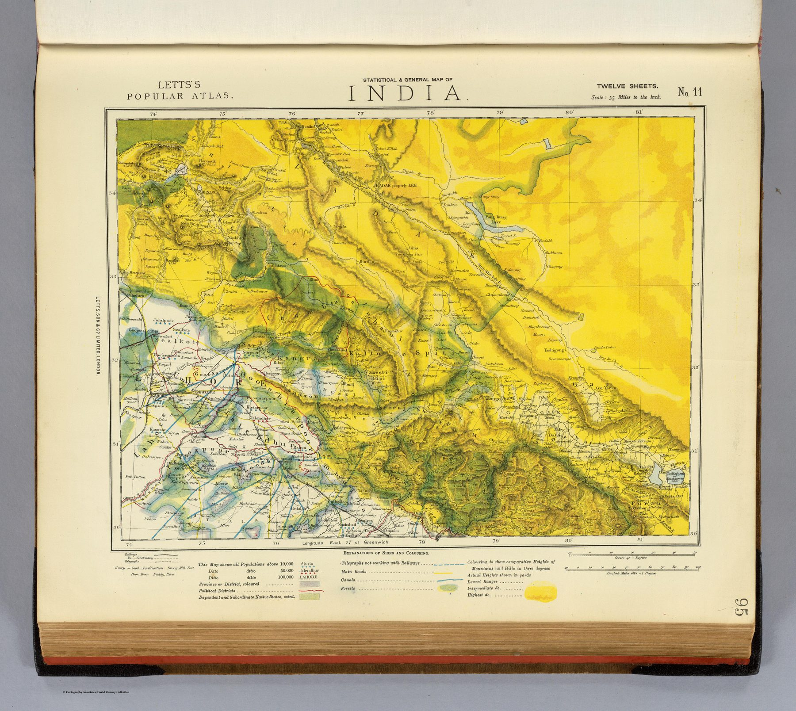

← Administered Empire and Victorian Atlas

The popular atlas sheet
Published by Letts, Son & Co. in 1883, the sheet is one of twelve that together form the general map of India in the firm’s Popular Atlas, at thirty-five miles to the inch. Its crowded content was a selling point: one sheet promised political reference, transport information and statistical or economic detail together.
Infrastructure as geography
Rail and telegraph lines, roads, ports, lighthouses and selected products or land uses make the imperial network visible. The map is concerned less with a single thematic argument than with the accumulated apparatus through which the subcontinent functioned.
The colony as system
By the late nineteenth century an atlas reader expected communications and productive capacity alongside borders and principal towns. The country is visualised as an economy joined by engineered lines.
The gaze
Sheet 11 makes sense only joined to its eleven companions, and the rails and wires that run off its edges are the joins. The buyer of a popular atlas was expected to assemble India for himself, sheet by sheet, along lines that engineers had already laid; the country arrives pre-connected, and the reader’s task is simply to follow the connections.
In the Deccan timeline
The railway climbs the ghats (1853–1863) · The Mysore question (1867, rendition 1881)